Overview
Welcome to MoveMaster!
Originally an RCOS project, MoveMaster was created with the vision of combining physics simulation and machine learning to determine the most optimal move set for winning various online and tabletop games. By leveraging advanced computational techniques, MoveMaster strives to provide users with strategic recommendations tailored to the selected game.
Welcome to MoveMaster!
Originally an RCOS project, MoveMaster was created with the vision of combining physics simulation and machine learning to determine the most optimal move set for winning various online and tabletop games. By leveraging advanced computational techniques, MoveMaster strives to provide users with strategic recommendations tailored to the selected game.
Jenga
In Jenga, players take turns strategically removing pieces from a tower made of 54 wooden blocks, and stacking these pieces on top. The objective of the game is to avoid knocking over the tower. Although this seems like a relatively simple objective, in practice, this proves to be easier said than done.
MoveMaster allows users to define the current state of a Jenga game (i.e., the displacement of blocks). Based on the current configuration of the tower, MoveMaster suggests the best possible move to maximize a player's chances of success.
As it currently stands, Jenga is the only tabletop game we have been developing MoveMaster for. However, we are open to exploring other tabletop games in the future.
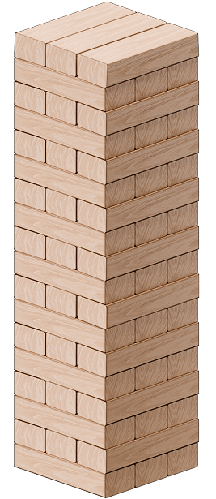
In Jenga, players take turns strategically removing pieces from a tower made of 54 wooden blocks, and stacking these pieces on top. The objective of the game is to avoid knocking over the tower. Although this seems like a relatively simple objective, in practice, this proves to be easier said than done.
MoveMaster allows users to define the current state of a Jenga game (i.e., the displacement of blocks). Based on the current configuration of the tower, MoveMaster suggests the best possible move to maximize a player's chances of success.
As it currently stands, Jenga is the only tabletop game we have been developing MoveMaster for. However, we are open to exploring other tabletop games in the future.
Timeline
U24
We first started working on MoveMaster in the summer of 2024. Over the course of U24, we achieved the following:
To learn more about our conjecture (and our underlying representation of the game as a whole), see Modeling the Game Mathematically.
To learn more about our visualizer, see Game-State Visualizer in Scratch.
To learn more about the first version of our game-state simulator, see Game-State Simulator V1 in Unity.
S25
In the first half of S25, we have achieved the following:
U24
We first started working on MoveMaster in the summer of 2024. Over the course of U24, we achieved the following:
- Developed a basic conjecture about when blocks are safe vs. unsafe to remove.
To learn more about our conjecture (and our underlying representation of the game as a whole), see Modeling the Game Mathematically.
- Developed a primitive game-state visualizer in Scratch.
To learn more about our visualizer, see Game-State Visualizer in Scratch.
- Developed a physics-based Jenga game-state simulator in Unity.
To learn more about the first version of our game-state simulator, see Game-State Simulator V1 in Unity.
S25
In the first half of S25, we have achieved the following:
- Revised our underlying game-state representation to better adhere to the rules of Jenga.
- Created a Jenga game sequence generator in Python.
- Updated our Unity simulator to accept/execute user-inputted game sequences.
Modeling The Game Mathematically
In a classic game of Jenga, there are 54 wooden blocks. Assuming we can have less than 54 blocks in play at any point in the game (i.e., assuming we break the official rules of Jenga), this means that there are 254 = 18,014,398,509,000,000 (roughly 18 quadrillion) unique configurations of jenga blocks achievable by simply removing pieces from the original tower. In order to differentiate these game states from one another, let’s represent a game configuration as a 54-bit long sequence of binary:
In a classic game of Jenga, there are 54 wooden blocks. Assuming we can have less than 54 blocks in play at any point in the game (i.e., assuming we break the official rules of Jenga), this means that there are 254 = 18,014,398,509,000,000 (roughly 18 quadrillion) unique configurations of jenga blocks achievable by simply removing pieces from the original tower. In order to differentiate these game states from one another, let’s represent a game configuration as a 54-bit long sequence of binary:
111 111 111 111 111 111 111 111 111 111 111 111 111 111 111 111 111 111
In our model, the left-most bits represent the blocks at the very bottom of the tower, and the right-most bits represent the blocks at the very top of the tower. Additionally, “1” bits indicate the presence of a block in that position, while “0” bits indicate the absence of a block. Furthermore, every tribit represents a layer in the Jenga tower, with the bits progressing from furthest from the camera → closest to the camera when being read from left → right.
Since this manner of representing the configuration of a Jenga game is not particularly intuitive, we provide a labeled diagram to the right:
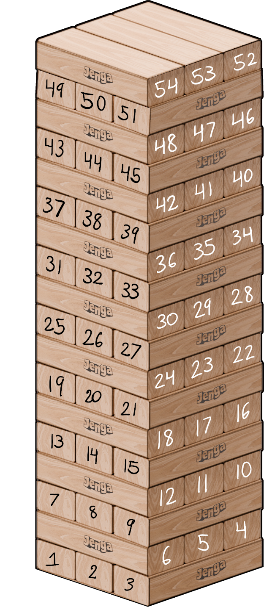
Let’s consider a different sequence:
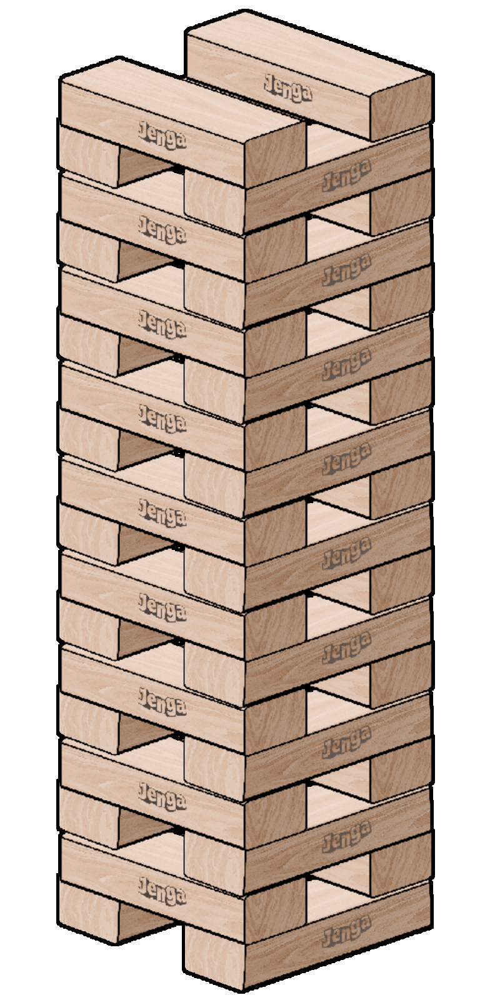 This would be considered a “success state” because this tower is structurally sound and would not collapse.
Let’s consider another sequence:
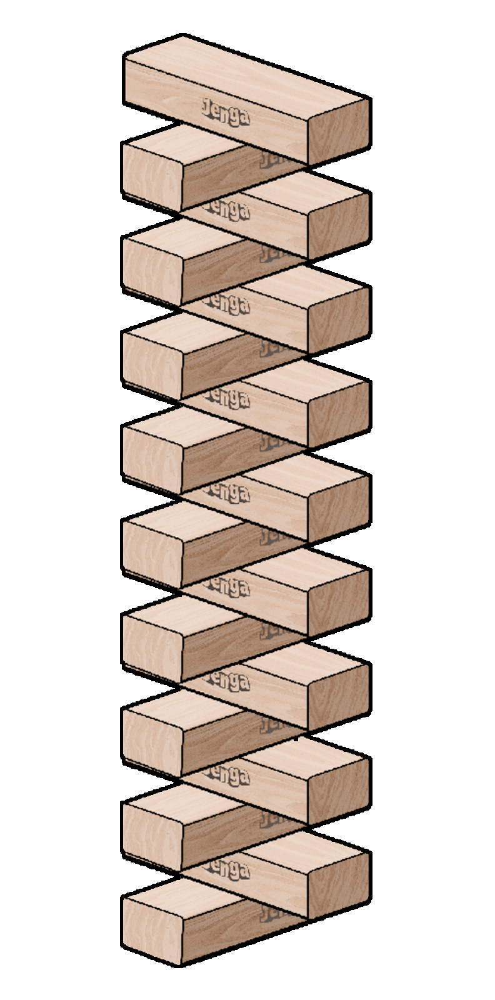 Similar to the previous configuration, this would also be considered a “success state” because this tower is structurally sound and would not collapse.
On the other hand, if we were to visualize a sequence like:
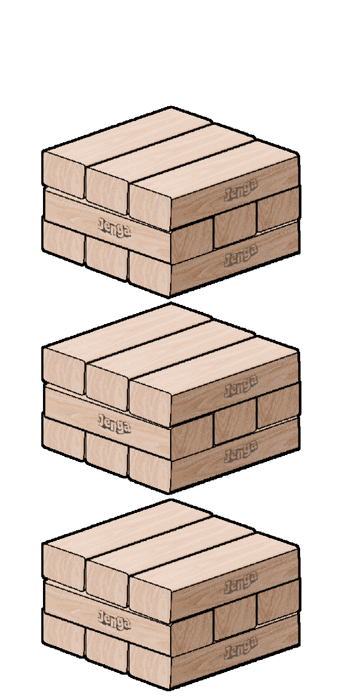 This would immediately be ruled out as a “fail state” because the tower is (clearly) unstable and would collapse.
Similarly, if we were to visualize a sequence like:
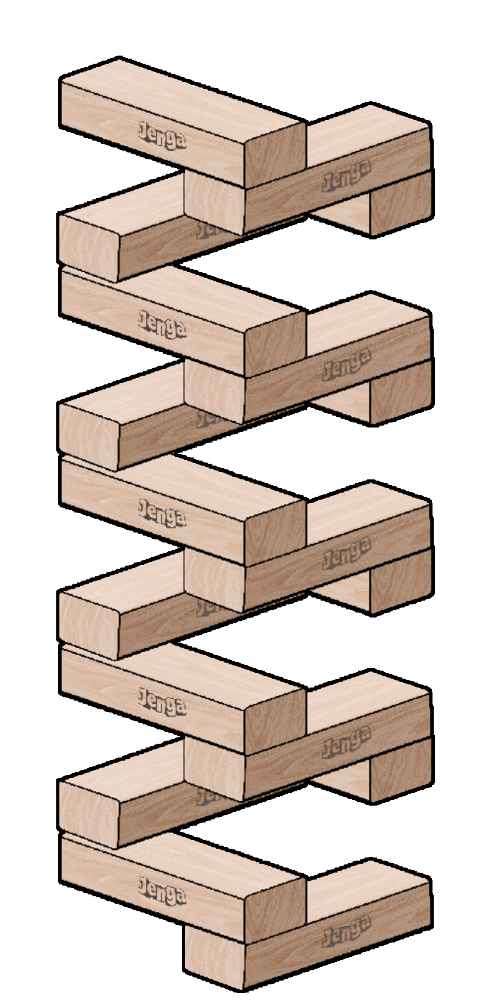 Again, this would be considered a “fail state” because the tower is highly unstable and would collapse.
Although we could simply use the physics engine to determine which states are success and fail states (i.e., whether or not the tower falls over), if we assume that running a single simulation takes 0.1 seconds, this means that simulating all 254 possible configurations would take approximately 57,123,283 years (this is unreasonably long!). Thus, we must rely on analysis techniques to eliminate as many fail states as we can.
Eliminating “Fail States” Through Analysis
As demonstrated earlier, not all 254 of these configurations are physically possible, as some of these combinations would result in floating pieces, or pieces whose center of mass is not supported, immediately constituting a fail state. In order to determine what fraction of these configurations result in fail states, let us reconsider 2 of the above examples: 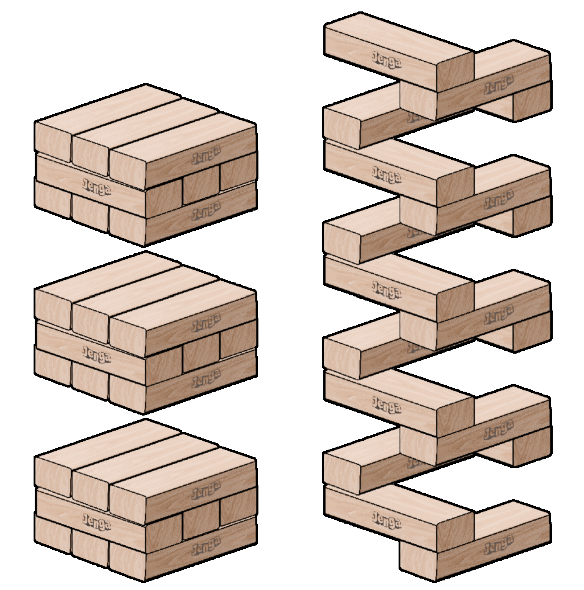 On the left is 111 111 111 000 000 000 111 111 111 000 000 000 111 111 111 000 000 000.
On the right is 001 001 100 100 001 001 100 100 001 001 100 100 001 001 100 100 001 001.
A similarity that exists between these two fail configurations is the presence of two or more consecutive zeros within a single tribit. Let’s visualize some more sequences to determine if this is a consistent pattern:
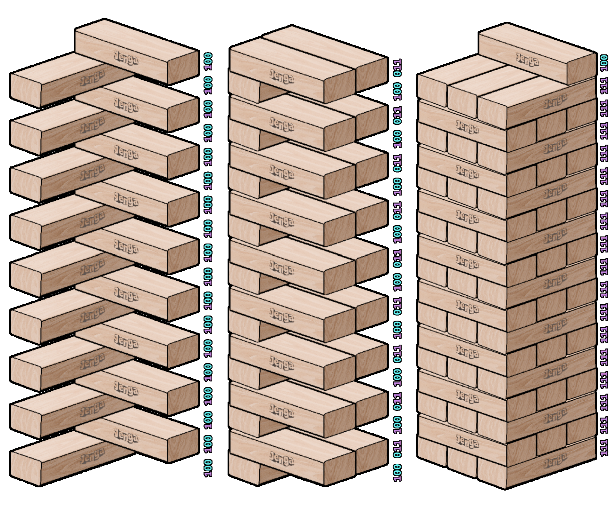
101 101 101 101 101 101 101 101 101 101 101 101 101 101 101 101 101 101
Visualizing this sequence, we have the following game configuration: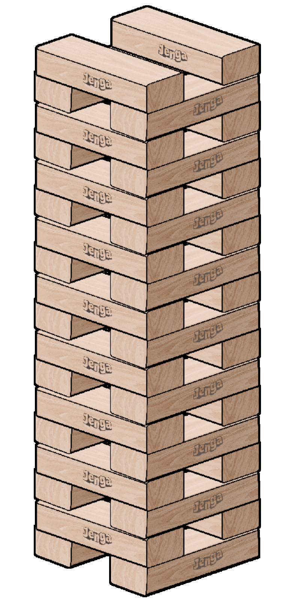 This would be considered a “success state” because this tower is structurally sound and would not collapse.
Let’s consider another sequence:
010 010 010 010 010 010 010 010 010 010 010 010 010 010 010 010 010 010
If we were to visualize the above sequence: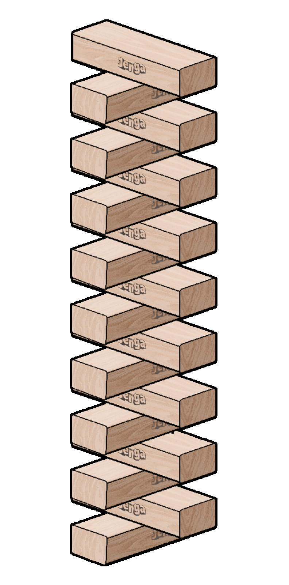 Similar to the previous configuration, this would also be considered a “success state” because this tower is structurally sound and would not collapse.
On the other hand, if we were to visualize a sequence like:
111 111 111 000 000 000 111 111 111 000 000 000 111 111 111 000 000 000
This would result in the following game configuration: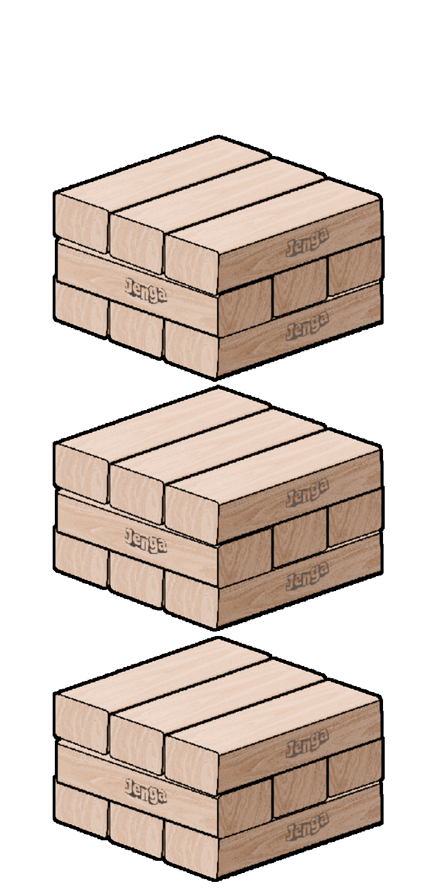 This would immediately be ruled out as a “fail state” because the tower is (clearly) unstable and would collapse.
Similarly, if we were to visualize a sequence like:
001 001 100 100 001 001 100 100 001 001 100 100 001 001 100 100 001 001
This would result in the following game configuration: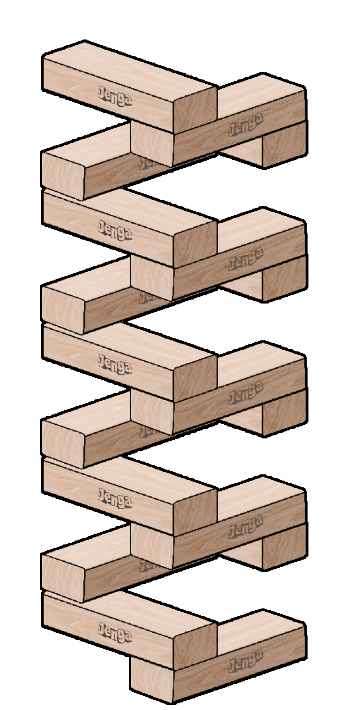 Again, this would be considered a “fail state” because the tower is highly unstable and would collapse.
Although we could simply use the physics engine to determine which states are success and fail states (i.e., whether or not the tower falls over), if we assume that running a single simulation takes 0.1 seconds, this means that simulating all 254 possible configurations would take approximately 57,123,283 years (this is unreasonably long!). Thus, we must rely on analysis techniques to eliminate as many fail states as we can.
Eliminating “Fail States” Through Analysis
As demonstrated earlier, not all 254 of these configurations are physically possible, as some of these combinations would result in floating pieces, or pieces whose center of mass is not supported, immediately constituting a fail state. In order to determine what fraction of these configurations result in fail states, let us reconsider 2 of the above examples: 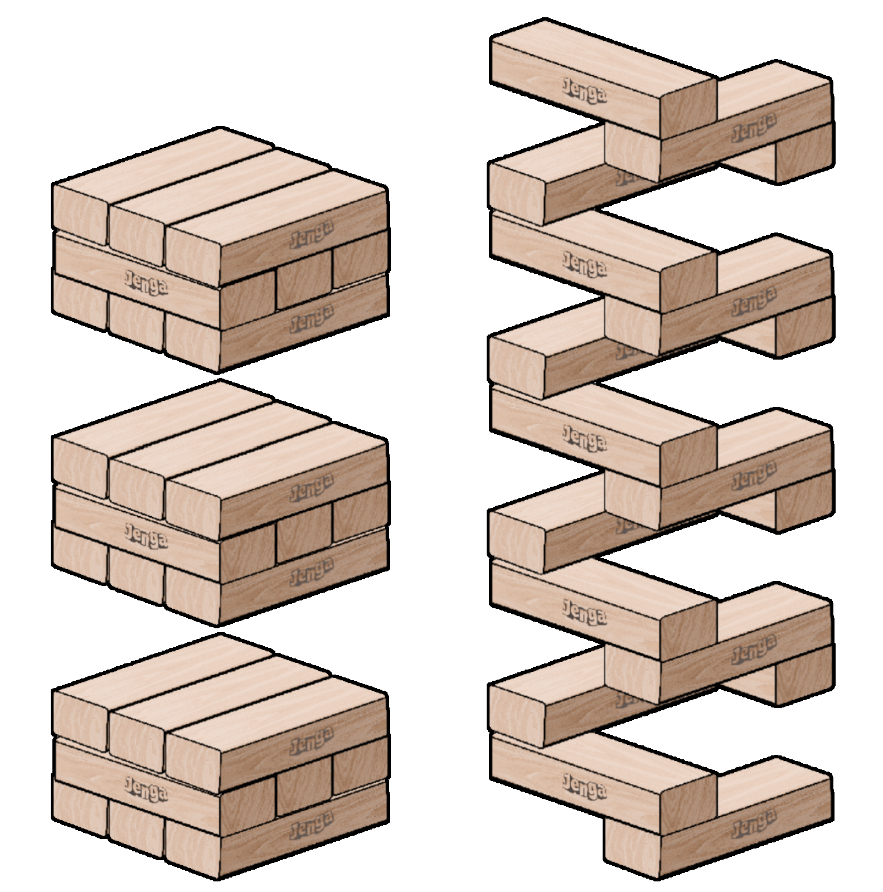 On the left is 111 111 111 000 000 000 111 111 111 000 000 000 111 111 111 000 000 000.
On the right is 001 001 100 100 001 001 100 100 001 001 100 100 001 001 100 100 001 001.
A similarity that exists between these two fail configurations is the presence of two or more consecutive zeros within a single tribit. Let’s visualize some more sequences to determine if this is a consistent pattern:
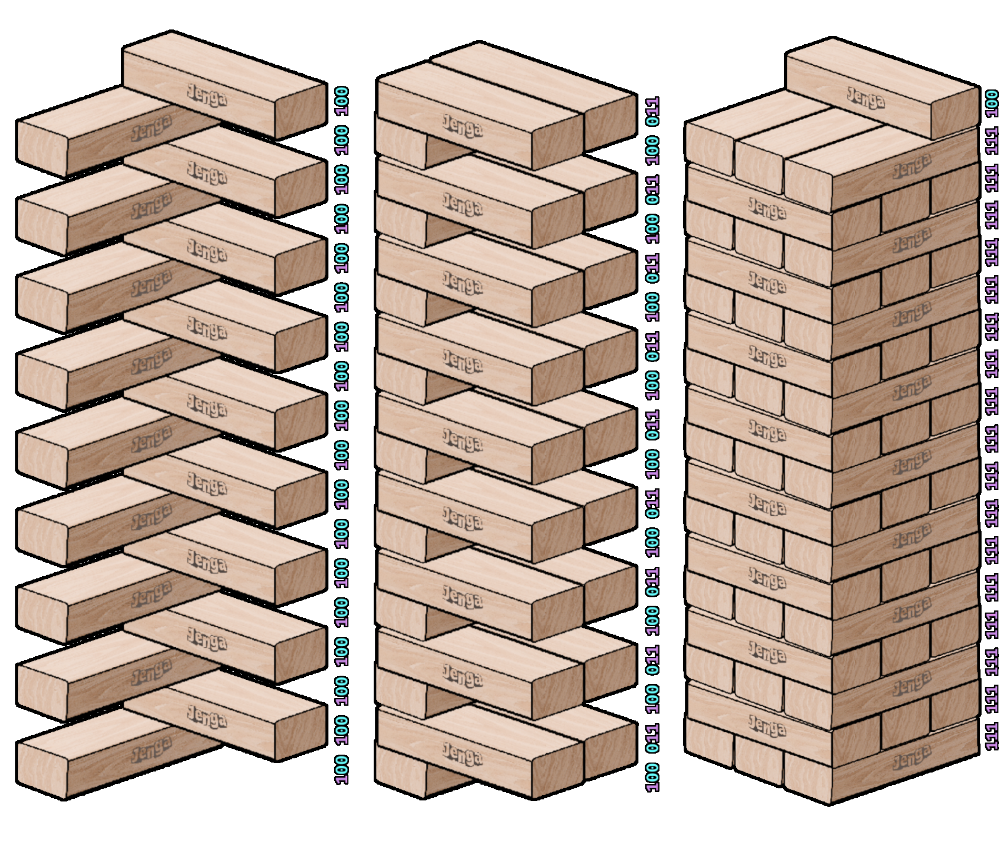
Game-State Visualizer in Scratch
Embedded below is a first version of our game-state visualizer, mocked up in Scratch.
The visualizer accepts a 54-bit binary sequence of 0s and 1s, and visualizes this sequence as a Jenga tower, where 0s are empty spaces and 1s are blocks.
This visualizer was created to aid in our discourse surrounding the development of our eventual Unity game-state simulator, as we did not have access to an actual Jenga set at the time, making it difficult to convey ideas effectively.
This tool can visualize all 254 unique configurations of Jenga blocks, including all impossible configurations (i.e., configurations with floating blocks).
It is worth noting that any state that is not 111111111111111111111111111111111111111111111111111111 is technically not a valid game state, as all 54 blocks must be in play during an official game of Jenga.
Instructions
Feature or Bug? You Decide!
This visualizer is quite buggy. If you notice that pieces are stacked incorrectly, restart the visualizer (by clicking the green flag) and input your desired sequence again.
Embedded below is a first version of our game-state visualizer, mocked up in Scratch.
The visualizer accepts a 54-bit binary sequence of 0s and 1s, and visualizes this sequence as a Jenga tower, where 0s are empty spaces and 1s are blocks.
This visualizer was created to aid in our discourse surrounding the development of our eventual Unity game-state simulator, as we did not have access to an actual Jenga set at the time, making it difficult to convey ideas effectively.
This tool can visualize all 254 unique configurations of Jenga blocks, including all impossible configurations (i.e., configurations with floating blocks).
It is worth noting that any state that is not 111111111111111111111111111111111111111111111111111111 is technically not a valid game state, as all 54 blocks must be in play during an official game of Jenga.
Instructions
To use the visualizer, press the green flag button (top left), and enter a 54-bit binary sequence in the text field.
You can try recreating the various sequences detailed in Modeling the Game Mathematically by copy-pasting the following sequences:
111111111111111111111111111111111111111111111111111111
101101101101101101101101101101101101101101101101101101
010010010010010010010010010010010010010010010010010010
111111111000000000111111111000000000111111111000000000
001001100100001001100100001001100100001001100100001001
111111111111111111111111111111111111111111111111111100
You can try recreating the various sequences detailed in Modeling the Game Mathematically by copy-pasting the following sequences:
111111111111111111111111111111111111111111111111111111
101101101101101101101101101101101101101101101101101101
010010010010010010010010010010010010010010010010010010
111111111000000000111111111000000000111111111000000000
001001100100001001100100001001100100001001100100001001
111111111111111111111111111111111111111111111111111100
This visualizer is quite buggy. If you notice that pieces are stacked incorrectly, restart the visualizer (by clicking the green flag) and input your desired sequence again.
Game-State Simulator V1 in Unity
Embedded below is V1 of our Unity Game-State Simulator.
To serve as a basic framework/prototype for our eventual machine-learning program, we created a Jenga game-state simulator that makes use of Unity's built-in physics engine. This simulator allows a user to remove blocks from the tower, watch the outcome of their configuration in real time (by enabling physics), and save/load various configurations of said tower. Additionally, this simulator acts a slightly more sophisticated version of our initial Scratch game-state visualizer.
Instructions
To start the simulator, press Launch Simulator (V1).
When the simulation starts, select blocks to remove them from the tower.
When you're ready, press the Start Button to toggle gravity, and watch the chaos unfold.
Controls


 Not All Bugs Are Bad – Some Are Features
Not All Bugs Are Bad – Some Are Features
Not unlike our Scratch visualizer, Version 1 of our game-state simulator is also quite buggy. If you notice that the Save State button doesn't save the state properly, or the indicator stops indicating properly, restart the simulation (reload the page) and try again.
Embedded below is V1 of our Unity Game-State Simulator.
To serve as a basic framework/prototype for our eventual machine-learning program, we created a Jenga game-state simulator that makes use of Unity's built-in physics engine. This simulator allows a user to remove blocks from the tower, watch the outcome of their configuration in real time (by enabling physics), and save/load various configurations of said tower. Additionally, this simulator acts a slightly more sophisticated version of our initial Scratch game-state visualizer.
Instructions
To start the simulator, press Launch Simulator (V1).
When the simulation starts, select blocks to remove them from the tower.
When you're ready, press the Start Button to toggle gravity, and watch the chaos unfold.
Controls
Status Indicator (Check or Cross)
Reset Tower
Save Current Tower Configuration
Start/Stop Simulation (Toggle Gravity)
Change Viewing Angle
Not unlike our Scratch visualizer, Version 1 of our game-state simulator is also quite buggy. If you notice that the Save State button doesn't save the state properly, or the indicator stops indicating properly, restart the simulation (reload the page) and try again.